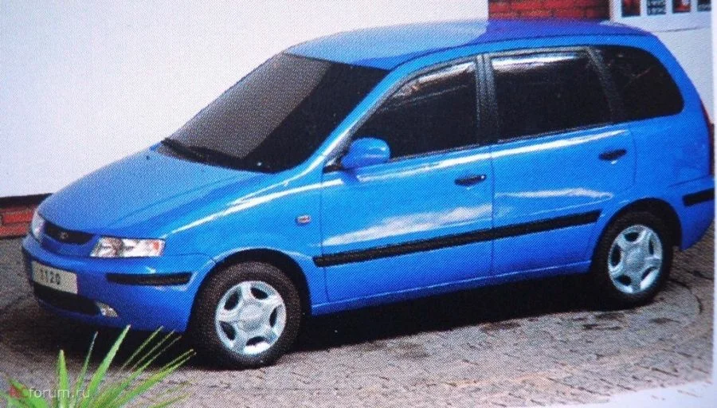

LADA Kalina - семейство российских автомобилей малого класса. Производилась с 2004 по 2013 год. В 2011 году кузов типа седан получил отдельное имя — «Granta».
Разработка нового после кузовов ВАЗ-2110/2111/2112 семейства началась в 1993 году: к тому же времени сформировался кузов автомобиля повышенной проходимости следующего поколения — «Лада Нива» ВАЗ-2123, в едином стиле с которым и были оформлены кузова родственного ему семейства «Лада Калина». В 1998 проектируемый автомобиль получил название «Лада Калина». Прототипы демонстрировались в 1999 — хетчбэк, в 2000 — седан и в 2001 — универсал. Предсерийные экземпляры из ОПП, созданные по обходным технологиям, имели раздельные передние фары от ВАЗ-1111 «Ока». К началу серийного производства была частично пересмотрена внешность кузова — особенно его передней части, получившей прозвище «смеющийся дельфин», в результате чего она приобрела более строгие формы.
18 ноября 2004 года началось производство автомобилей с кузовом седан, а 21 июля 2006 начата сборка хетчбэка ВАЗ-1119 (4 августа состоялась продажа первого автомобиля). В июле 2007 года началось производство «Лады-Калины» с новым 16-клапанным двигателем объёмом 1,4 литра, а в сентябре того же года АвтоВАЗ приступил к выпуску модели с АБС. В 2007 году из-за дефекта в рулевой колонке пришлось отозвать 6200 автомобилей кузова седан, произведённых в декабре 2005 — январе 2006 (они были отремонтированы дилером АвтоВАЗа компанией «Брянск-Лада»). Из-за дефекта литья картера рулевого механизма АвтоВАЗ отозвал 171 автомобиль модели LADA Kalina, которые были выпущены 24 — 25 мая 2006 года. Кроме того, АвтоВАЗ отзывал 8400 автомобилей LADA Kalina из-за дефектов опор двигателя. За два года было собрано 80 тысяч автомобилей, суточный темп сборки — 335 штук. В 2007 планировалось выйти на темп производства 145 тыс. в год. В начале 2007 года запущен в производство последний автомобиль семейства — универсал ВАЗ 1117, а в сентябре того же года на всё семейство стали ставить двигатель объёмом 1,4 литра (ВАЗ-11194). В мае 2007 года во время посещения АвтоВАЗа президент России Владимир Путин совершил пробную поездку на Ладе Калине на испытательном треке. По его словам, он сумел развить скорость 120 километров в час. В 2008 году на базе хетчбэка ВАЗ-1119 была создана спортивная модификация Lada Kalina Sport, доступная с двигателями ВАЗ-11194 объёмом 1,4 л, и ВАЗ-21126 объёмом 1,6 л. Модель практически аналогична стандартной модели в исполнении «люкс», отличия лишь в оригинальных деталях: бампера, молдинги дверей, спойлер, насадка выхлопной трубы, шильдик на пятой двери «Kalina Sport», комбинация приборов с белыми шкалами и оранжевой подсветкой, тёмный салон, спортивные накладки педалей, передние кресла с выраженной боковой поддержкой, на передних креслах вышито Kalina Sport, оригинальные литые диски K&K (в том числе и для запасного колеса, тогда как в версии «люкс» запаска на штампованном диске). По данным комитета автопроизводителей Ассоциации европейского бизнеса (АЕБ) за 2009 год, семейство LADA Kalina занимает 4 место в рейтинге самых популярных моделей в России. В 2009 году реализовано 60746 автомобилей. В середине июля 2010 года в ходе конференции маркетологов АвтоВАЗа руководитель программы бюджетных автомобилей концерна Василий Батищев заявил, что помимо постоянной модернизации семейства LADA Kalina (в частности, в 2010 году в производство пошёл чёрный «базальтовый» интерьер, а часть комплектаций стали дополнять штатной аудиосистемой) завод к 2012 году готовит серьёзное обновление комплектаций и внешний рестайлинг для всего семейства. 1 мая 2011 года пресс-служба АвтоВАЗа заявила, что завод прекращает выпуск автомобиля LADA Kalina в кузове седан, заменив его новым бюджетным автомобилем Lada Granta. За первые пять месяцев 2011 года (январь-май) LADA Kalina заняла первое место по количеству проданных в России автомобилей (59 249 штук). В декабре 2011 года АвтоВАЗ завершил перевод модельного ряда автомобилей Lada на экостандарт Евро-4. 1 марта 2013 было прекращено производство «Лады-Калины» первой серии в кузове хетчбэк в связи с модернизацией конвейера для производства автомобиля второй серии. 1 июня 2013 года снят с производства универсал.
Двигатель оснащён системой электронного управления впрыском топлива и зажиганием. Конструкция кузова автомобиля отвечает современным требованиям безопасности. За счёт длины, меньшей, чем у автомобилей семейства LADA Samara, ВАЗ-1119 обладает лучшей манёвренностью и в большей степени приспособлен к условиям движения в городской среде. В зависимости от комплектации, на автомобиль устанавливались антиблокировочная система тормозов (АБС), подушки безопасности водителя и переднего пассажира, кондиционер, электроусилитель руля. С начала 2011 года семейство LADA Kalina комплектовали электронной педалью газа «Е-газ».
После неудачной попытки заменить автомобиль «Ока» в 2003—2006 году моделью ВАЗ-1121 АвтоВАЗ предпринял вторую (и последнюю) попытку в 2007 году. Предполагалось заменить «Оку» на 3-дверный хетчбэк A-класса на базе LADA Kalina. Проект получил название ВАЗ-11174, а официальным названием стало LADA Kalina City. Автомобиль не получил особых изменений (80 % унификации с ВАЗ-1117). Но выпустить этот автомобиль так и не удалось. Потребительская ниша, которую занимал автомобиль «Ока», всё ещё свободна. Существовал проект компактного минивэна для семейства Lada Kalina, которому был присвоен индекс «ВАЗ-1120», но в серию он не пошёл. Также существовал проект ВАЗ 1117 "Калина" в полноприводной модификации с разработанной специально для данного автомобиля собственной системой полного привода (в отличие от автомобилей 2109 и 2110 в модификации "Тарзан", для постройки которых использовался полный привод от автомобиля ВАЗ 2121 "Нива") и мотором объёмом 1.8л. Но, к сожалению, данный проект не вышел в серию и был закрыт на финальной стадии. Данную модификацию можно встретить в музее АвтоВАЗа.
Типы кузовов: седан, хетчбэк, универсал. Салон:
Kalina City:
Kalina Sport:
Kalina 4WD:
Нереализованный проект минивэна:
